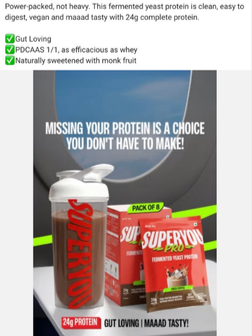
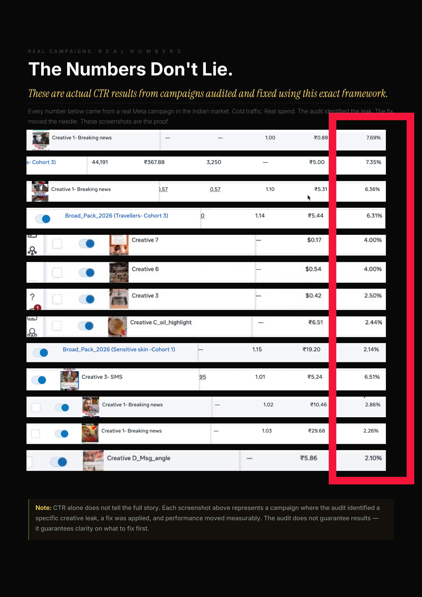

The transformation
Diagnosis is the first step
Diagnosis is the first step
towards transformation.
Once the kit did its job, we acted. Here is how:
Before

After
A creative audit framework based on consumer psychology that tells you exactly why your creative is failing — inside 2 minutes.
(Before you spend any money on it)
Get the Ad Autopsy KitFive real ads. What they were actually getting versus what the audit predicted.
Every video on admasterjojo is this framework running on a real ad. Publicly. Before this kit existed.
Not aesthetic opinions. Documented mechanisms of how the human brain processes advertising. Each signal scores something specific and tells you exactly what it is costing you.
Once the kit did its job, we acted. Here is how:

This is not a product that gets outdated. It is a framework built on human psychology. Every improvement we make is yours automatically.
These are actual CTR results from campaigns diagnosed using this exact framework.
